JPA & Hibernate
Object-Relational Mapping
Bauhaus-Universität Weimar
Artur Solomonik
Datenspeicherung
Komplexe Daten bequem hinzufügen, entfernen und bearbeiten
Datenbanken
Selbstständige, auf Dauer und flexiblen und sicheren Gebrauch ausgelegte Datenorganisation, die sowohl eine Datenbasis als auch eine zugehörige Datenverwaltung (DBMS) umfasst. Eine Datenbank dient dazu, eine große Menge von Daten strukturiert zu speichern und zu verwalten.
Erster Versuch
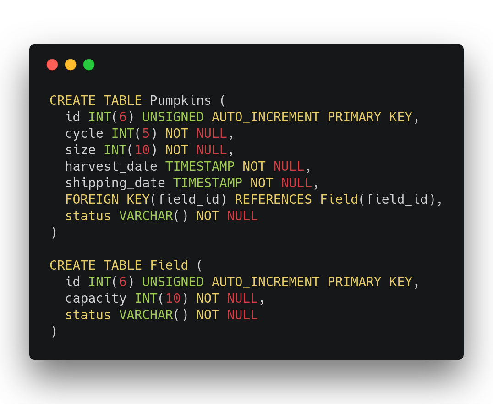ER-Diagramm
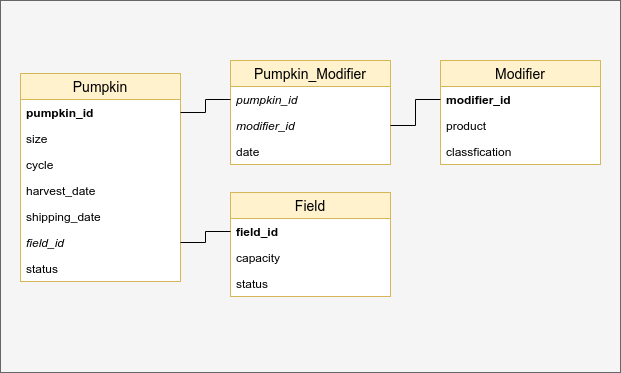Neue Daten hinzufügen
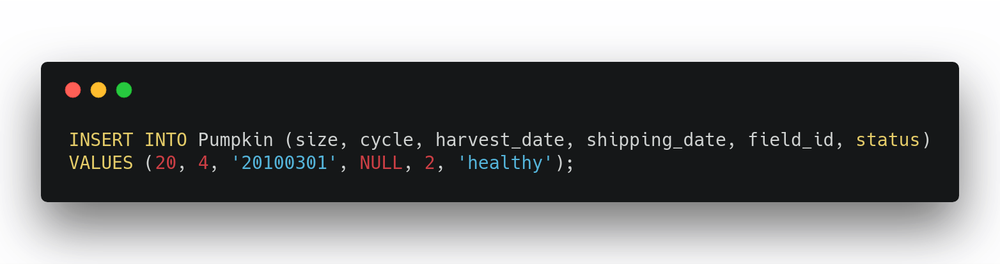
Probleme
- Eingaben per Hand sind mühselig (und veraltet)
- Relationen nicht greifbar
- Für große Projekte umständlich
- Komplexe Abfragen und Subqueries kosten nur Zeit und Nerven
- Injektionssicherheit oft übersehen / vergessen
- Warum so, wenn es auch einfacher geht?
Object-Relational Mapping (ORM)
Konvertierung von Daten zweier unterschiedlicher Typdarstellungen
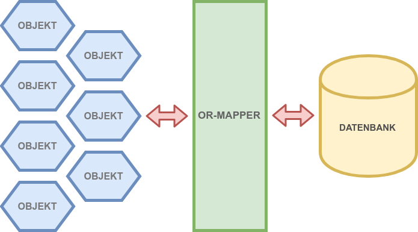Grundlegendes Prinzip
- Konvertierung zwischen Datentupeln und Klassenobjekten
- Abbildung von Klassen auf Tabellen
- Reservierung von Klassenattributen in Tabellenspalten
- Referenzen auf andere Klassen durch Fremdschlüsselbeziehungen realisiert
- Datenbankkonzepte während der Entwicklung meistens obsolet
Shadow Informations
- Informationen die von der Objektsemantik unabhängig sind
- Daten zur Identifizierung
- Hilfsdaten für Zugriffssteuerung
- Persistenz
Persistenz
- Daten sollen Gültigkeitsbereich der JVM übersteigen
- Informationen über lange Zeit behalten abrufen
- "nicht unkontrolliert veränderlich"
Warum genau sind die Daten inkompatibel?
Paradigmenkonflikte
| Konflikt | OOP | RDBMS |
|---|---|---|
| Vererbung | Fundamentales Prinzip der OOP | Keine standardisierte Definition |
| Identität | Objektidentität, Objektgleichheit | Primärschlüssel |
| Assoziation | Ungerichtete Referenzen | Fremdschlüsselbeziehungen |
| Navigation | Assoziationen | Queries |
Abbildung von Vererbungshierarchien
- Vererbung als Grundlage der OOP muss auch in Datenbanken umsetzbar gemacht werden
- Drei verschiedene Methoden
- Kombination in verschiedenen Frameworks
Tabelle pro Vererbungshierarchie
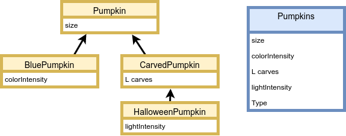Tabelle pro Unterklasse
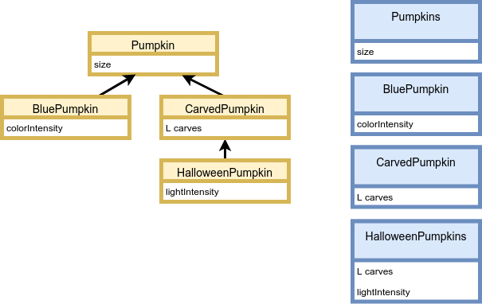Tabelle pro konkrete Klasse
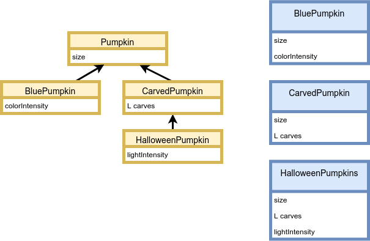Design Patterns
Active Record
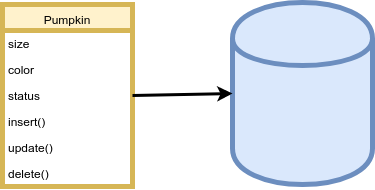- Objekte beinhalten sowohl Daten als auch ihr Verhalten
Data Mapper
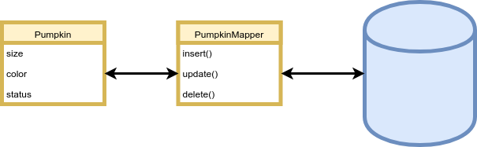Active Record vs. Data Mapper
- Effiziente Kommunikation mit Crud Repositories
- Einfache Kommunikation mit verschiedenen Speichermodellen
- Zusammenspiel beider Patterns
JPA & Hibernate
Hibernate 
- ORM-Framework für Java
- Data Mapper als Design Pattern
- Kompatibilität mit anderen Datenbanken
- Abbildung über Annotations oder XML-Files (Mapping Files)
- Generierung von entsprechenden Datenbanktabellen und oder Java-Klassen
Relationen in Hibernate
- 1:1 Relationen durch Objektreferenzen
- 1:n/n:m Relationen durch (typisierte) Java-Collections
- Eager loading: Objekte in Relation sofort mitgeladen
- Lazy loading: Objekte in Relation geladen, wenn sie benötigt werden
- Reflexive Beziehungen auf eigene Klasse
- Operationen kaskadieren über Relationen
Weitere Besonderheiten
- Alle drei Arten der Abbildung von Vererbungsbeziehungen
- Wahlfreie Abbildung von Java-Typen auf SQL-Typen
- Java-Enums auf Integer abgebildet oder auf mehrere einzelne Tabellenspalten verteilt
- Hibernate Query Language (HQL) als eigene Sprache für objektorientierte Abfragen
Sessionfactories, Sessions und Transactions
- Sessionfactories laden alle Einstellungen und Abbildungen zu Programmstart
- Sessions enthalten alle Methoden für Datenbank-Operationen wie Insert, Update und verschiedene Query-Befehle
- Transactions regeln unverschachtelt den Datenfluss zwischen den einzelnen Ebenen
Java Persistence API
- Spezifikation der Schnittstelle zwischen Klassenobjekten und Datentupeln
- Keine Implementierungen und keine Funktionalitäten
- Definition bestimmter Regeln, die von entsprechenden ORM Providern eingehalten werden (wie Hibernate)
JPA is the dance, Hibernate is the dancer.
Maven Dependencies
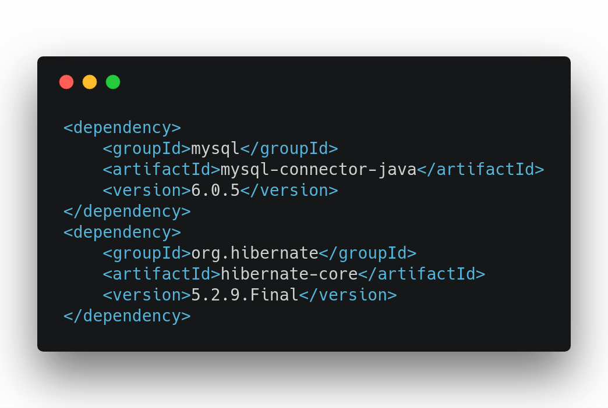Imports für Entities
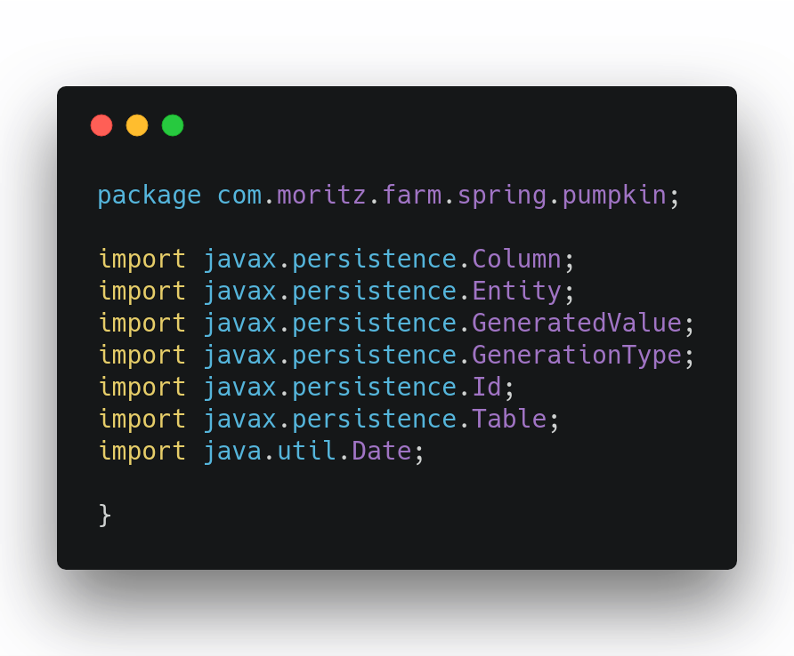Klassendefinition einer Entity
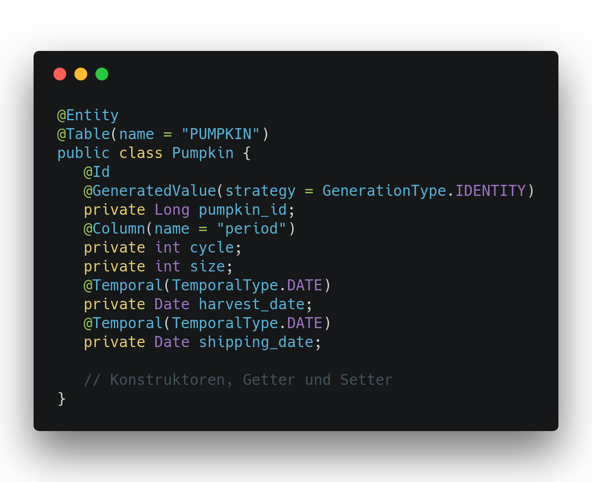Definition von Relationen (1:n)
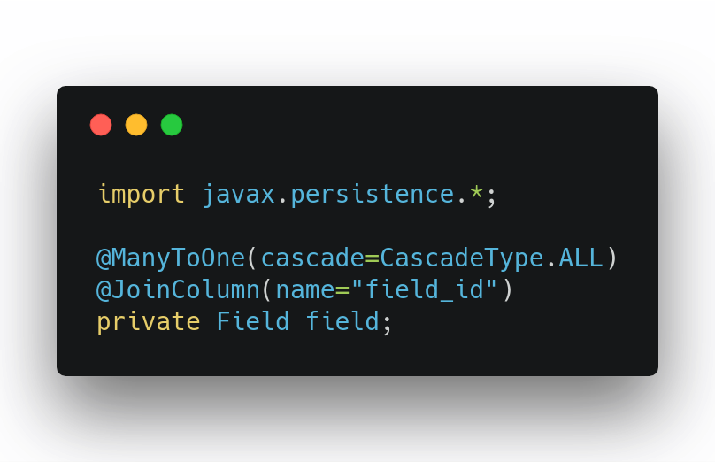Definition von Relationen (n:m)
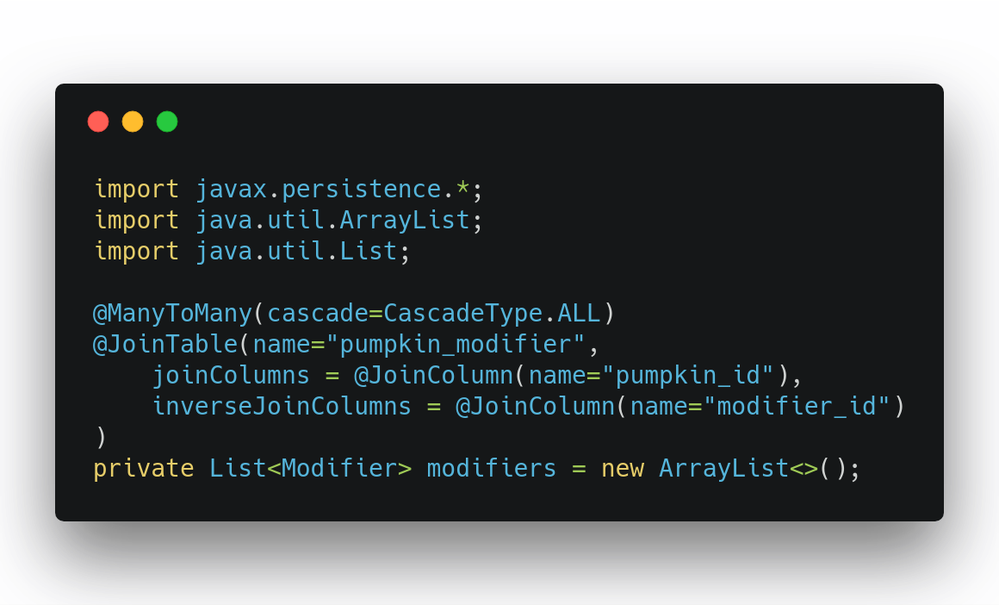Anmerkungen
- Hibernate benennt Klassen und Variablen für Tabellen um
- Strategien zur Namensgebung in der application.properties festlegen
- Grundlegende Kenntnisse in relationalen Datenbankschemata notwendig
- Collection für N:M-Beziehung den Umständen entsprechend anpassen
CRUD
Create Read Update Delete
CRUD-Repositories
- Repositories als Spielraum für alle Anfragen
- Viele verschiedene Ansätze über ORM anzufragen
- Mit Springboot: CRUD-Repositories
Queries in CRUD
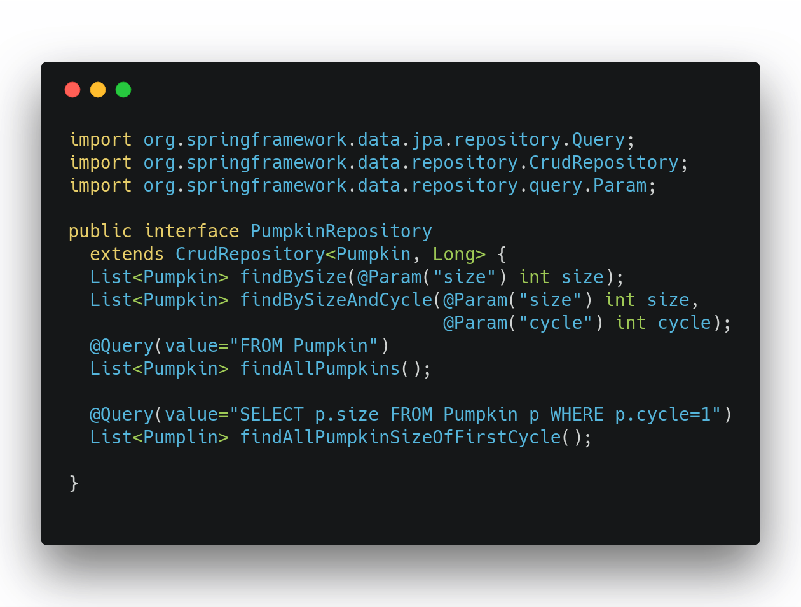
ORM-Kontroverse
- Unter vielen Entwicklern verpönt
- ORM als Anti-Pattern
- Overhead, Ineffizienz, Zeitaufwand
- "It depends" unzureichend als Entscheidungshelfer
Braucht man ORM und wo sind seine Probleme?
ORM: Nachteile
- Verkomplizierte Datentypen mit zu vielen Fremdschlüsseln
- SQL-Kenntnisse für saubere Implementierungen nötig
- Wieso sich um Umwandlungen in SQL Sorgen machen, wenn man es gleich in SQL schreiben kann?
- Viel Overhead durch überflüssige Queries
ORM: Vorteile
- Objekte wirken greifbarer als Tabellen während der Entwicklung
- Wenig komplizierter SQL-Code
- Neue Freiheiten und Features (z.B. lazy loading)
- Unabhängigkeit von Datenbank
- Weniger Code
- Ein einziges Objekt mit etlichen Attributen und unzähligen Joins lässt sich problemlos verarbeiten
Just because you're using hibernate, doesn't mean you have to use it for everything.